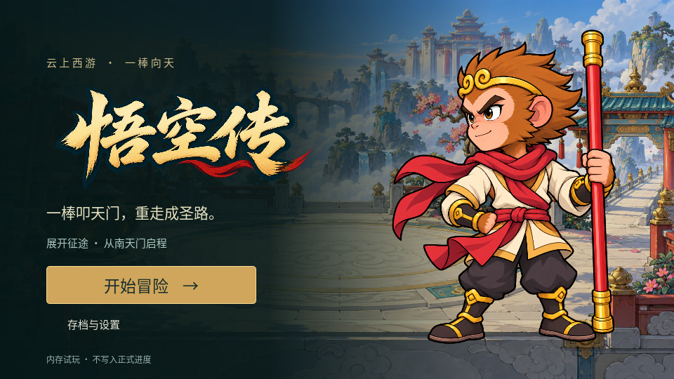
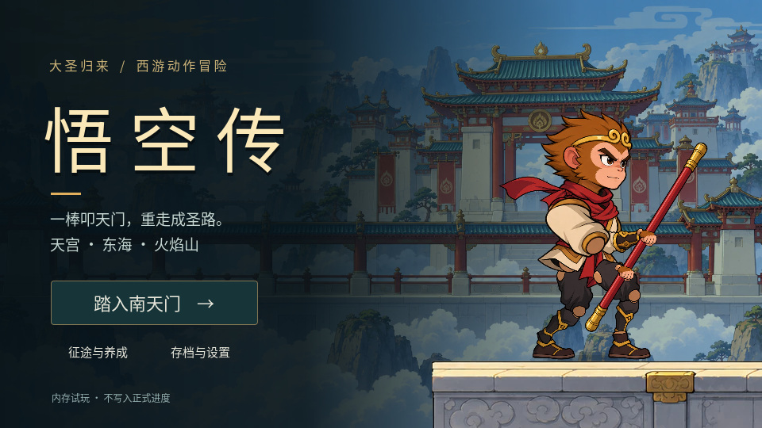
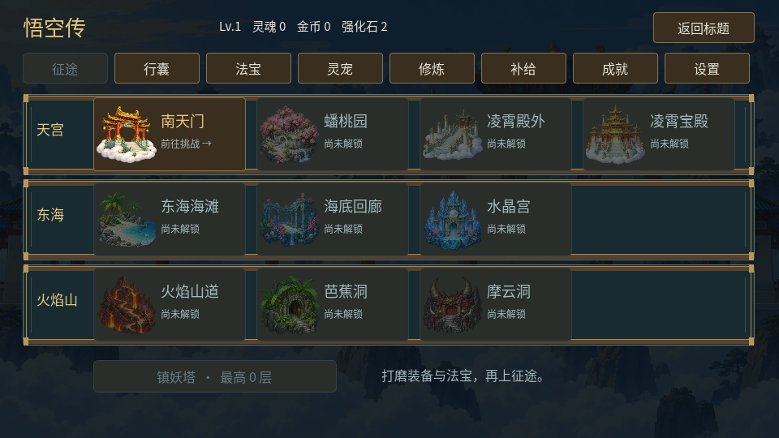
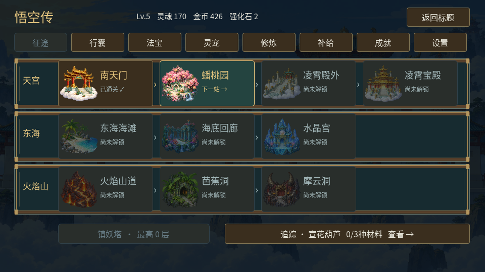

展开征途，一棒向天
保留地图作为主界面。从标题直接选择关卡，随时整理装备、炼宝和培养灵宠。
电脑浏览器 · 内存试玩，不写入正式进度。本轮更新加载与主界面，战斗和养成规则沿用。
标题与地图


下一关突出显示，底部可以直接查看炼宝材料。整备页面和战斗结束后都回到地图。
前后对照

R5标题R6标题 · 统一立绘与字标
R5地图
R6地图 · 根据进度提示下一关入口连续演示
原生自动界面演示，含新档与构造的旧档测试进度；不是浏览器或真人试玩录像。
加载页新增轻量图、真实下载进度、启动阶段与失败重试。资源总量约100.57MiB，比R5减少5.38MiB。当前Work关闭浏览器自动操作，浏览器首次加载、缓存和刷新仍待实测。